에너지관리기사 (2020-08-22 기출문제)
1과목: 연소공학
1. 링겔만 농도표는 어떤 목적으로 사용되는가?
- 연돌에서 배출되는 매연농도 측정
- 보일러수의 pH 측정
- 연소가스 중의 탄산가스 농도 측정
- 연소가스 중의 SOx 농도 측정
(정답률: 81%)

2. 연소가스를 분석한 결과 CO2:12.5%, O2:3.0%일 때, (CO2)max%는? (단, 해당 연소가스에 CO는 없는 것으로 가정한다.)
- 12.62
- 13.45
- 14.58
- 15.03
(정답률: 66%)
3. 화염온도를 높이려고 할 때 조작방법으로 틀린 것은?
- 공기를 예열한다.
- 과잉공기를 사용한다.
- 연료를 완전 연소시킨다.
- 노벽 등의 열손실을 막는다.
(정답률: 82%)
4. 일반적인 정상연소의 연소속도를 결정하는 요인으로 가장 거리가 먼 것은?
- 산소농도
- 이론공기량
- 반응온도
- 촉매
(정답률: 56%)
5. 다음과 같은 조성의 석탄 가스를 연소시켰을 때의 이론 습연소가스량(Nm3/Nm3)은?
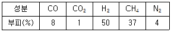
- 2.94
- 3.94
- 4.61
- 5.61
(정답률: 32%)
6. 다음 연소가스의 성분 중, 대기오염 물질이 아닌 것은?
- 입자상물질
- 이산화탄소
- 황산화물
- 질소산화물
(정답률: 70%)
7. 옥테인(CSH18)이 과잉공기율 2로 연소 시 연소가스 중의 산소 부피비(%)는?
- 6.4
- 10.1
- 12.9
- 20.2
(정답률: 49%)
8. C2H6 1Nm3을 연소했을 때의 건연소가스량(Nm3)은? (단, 공기 중 산소의 부피비는 21%이다.)
- 4.5
- 15.2
- 18.1
- 22.4
(정답률: 41%)
9. 연소장치의 연돌통풍에 대한 설명으로 틀린 것은?
- 연돌의 단면적은 연도의 경우와 마찬가지로 연소량과 가스의 유속에 관계한다.
- 연돌의 통풍력은 외기온도가 높아짐에 따라 통풍력이 감소하므로 주의가 필요하다.
- 연돌의 통풍력은 공기의 습도 및 기압에 관계없이 외기온도에 따라 달라진다.
- 연돌의 설계에서 연돌 상부 단면적을 하부 단멱적 보다 작게 한다.
(정답률: 68%)
10. 고체연료 연소장치 중 쓰레기 소각에 적합한 스토커는?
- 계단식 스토커
- 고정식 스토커
- 산포식 스토커
- 하압식 스토커
(정답률: 69%)
11. 헵테인(C7H16)1kg을 완전 연소하는데 필요한 이론공기량(kg)은? (단, 공기 중 산소 질량비는 23%이다.)
- 11.64
- 13.21
- 15.30
- 17.17
(정답률: 49%)
12. 액체연료 중 고온 건류하여 얻은, 타르계 중유의 특징에 대한 설명으로 틀린 것은?
- 화염의 방사율이 크다.
- 황의 영향이 적다.
- 슬러지를 발생시킨다.
- 석유계 액체연료이다.
(정답률: 53%)
13. 고체연료의 연료비를 식으로 바르게 나타낸 것은?
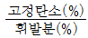
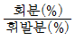
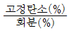
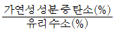
(정답률: 85%)
14. 어떤 탄화수소 CaHb의 연소가스를 분석한 결과, 용적 %에서 CO2:8.0%, CO:0.9%, O2:8.8%, N2:82.3%이다. 이 경우의 공기와 연료의 질량비(공연비)는? (단, 공기의 분자량은 28.96이다.)
- 6
- 24
- 36
- 162
(정답률: 48%)
15. LPG 용기의 안전관리 유의사항으로 틀린 것은?
- 밸브는 천천히 열고 닫는다.
- 통풍이 잘되는 곳에 저장한다.
- 용기의 저장 및 운반 중에는 항상 40℃ 이상을 유지한다.
- 용기의 전락 또는 충격을 피하고 가까운 곳에 인화성 물질을 피한다.
(정답률: 84%)
16. 연료비가 크면 나타나는 일반적인 현상이 아닌 것은?
- 고정 탄소량이 증가한다.
- 불꽃은 단염이 된다.
- 매연의 발생이 적다.
- 착화온도가 낮아진다.
(정답률: 45%)
17. 연소가스 부피조성이 CO2:13%, O2:8%, N2:79%일 때 공기 과잉계수(공기비)는?
- 1.2
- 1.4
- 1.6
- 1.8
(정답률: 58%)
18. 1Nm3의 질량이 2.59kg인 기체는 무엇인가?
- 메테인(CH4)
- 에테인(C2H6)
- 프로페인(C3HS)
- 뷰테인(C4H10)
(정답률: 61%)
19. 액체연료의 미립화 시 평균 분무입경에 직접적인 영향을 미치는 것이 아닌 것은?
- 액체연료의 표면장력
- 액체연료의 점성계수
- 액체연료의 탁도
- 액체연료의 밀도
(정답률: 77%)
20. 품질이 좋은 고체연료의 조건으로 옳은 것은?
- 고정탄소가 많을 것
- 회분이 많을 것
- 황분이 많을 것
- 수분이 많을 것
(정답률: 80%)
2과목: 열역학
21. 디젤 사이클에서 압축비가 20, 단절비(cut-off ratio)가 1.7일 때 열효율(%)은? (단, 비열비는 1.4이다.)
- 43
- 66
- 72
- 84
(정답률: 56%)
22. 열역학적 사이클에서 열효율이 고열원과 저열원의 온도만으로 결정되는 것은?
- 카르노 사이클
- 랭킨 사이클
- 재열 사이클
- 재생 사이클
(정답률: 72%)
23. 비엔탈피가 326kJ/kg인 어떤 기체가 노즐을 통하여 단열적으로 팽창되어 비엔탈피가 322kJ/kg으로 되어 나간다. 유입 속도를 무시할 때 유출 속도(m/s)는? (단, 노즐 속의 유동은 정상류이며 손실은 무시한다.)
- 4.4
- 22.6
- 64.7
- 89.4
(정답률: 41%)
24. 다음 T-S 선도에서 냉동사이클의 성능계수를 옳게 나타낸 것은? (단, u는 내부에너지, h는 엔탈피를 나타낸다.)
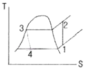
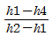
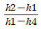
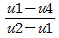
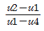
(정답률: 68%)
25. 열역학 제2법칙에 대한 설명이 아닌 것은?
- 제2종 영구기관의 제작은 불가능하다.
- 고립계의 엔트로피는 감소하지 않는다.
- 열은 자체적으로 저온에서 고온으로 이동이 곤란하다.
- 열과 일은 변환이 가능하며, 에너지보존 법칙이 성립한다.
(정답률: 72%)
26. 좋은 냉매의 특성으로 틀린 것은?
- 낮은 응고점
- 낮은 증기의 비열비
- 낮은 열전달계수
- 단위 질량당 높은 증발열
(정답률: 57%)
27. 다음 중에서 가장 높은 압력을 나타내는 것은?
- 1atm
- 10kgf/cm2
- 1⑤Pa
- 14.7psi
(정답률: 73%)
28. 랭킹 사이클에서 복수기 압력을 낮추면 어떤 현상이 나타나는가?
- 복수기의 포화온도는 상승한다.
- 열효율이 낮아진다.
- 터빈 출구부에 부식문제가 생긴다.
- 터빈 출구부의 증기 건도가 높아진다.
(정답률: 51%)
29. 다음 관계식 중에 틀린 것은? (단, m은 질량, U는 내부에너지, H는 엔탈피, W는 일, Cp와 Cv는 각각 정압비열과 정적비열이다.)
- dU=mCvdT
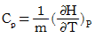
- δW=mCvdT
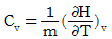
(정답률: 53%)
30. 유동하는 기체의 압력을 P, 속력을 V, 밀도를 ρ, 중력 가속도를 g, 높이를 z, 절대온도는 T, 정적비열을 Cv라고 할 때, 기체의 단위질량당 역학적 에너지에 포함되지 않는 것은?
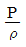
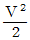
- gz
- CvT
(정답률: 60%)
31. 1kg의 이상기체(Cp=1.0kJ/kg·K, Cv=0.71kJ/kg·K)가 가역단열과정으로 P1=1Mpa, P2=100KPa으로 변한다. 가역단열과정 후 이 기체의 부피 V2와 온도 T2는 각각 얼마인가?(오류 신고가 접수된 문제입니다. 반드시 정답과 해설을 확인하시기 바랍니다.)
- V2=2.24m3, T2=1000K
- V2=3.08m3, T2=1000K
- V2=2.24m3, T2=1060K
- V2=3.08m3, T2=1060K
(정답률: 33%)
32. 그림은 랭킨사이클의 온도, 엔트로피(T-S)선도이다. 상태 1~4의 비엔탈피 값이 h1=192kJ/kg, h2=194kJ/kg, h3=2802kJ/kg, h4=2010kJ/kg이라면 열효율(%)은?
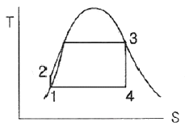
- 25.3
- 30.3
- 43.6
- 49.7
(정답률: 46%)
33. 그림에서 압력 P1, 온도ts의 과열증기의 비엔트로피는 6.16kJ/kg·K이다. 상태1로부터 2까지의 가역단열 팽창 후, 압력 P2에서 습증기로 되었으면 상태2인 습증기의 건도 X는 얼마인가? (단, 압력 P2에서 포화수, 건포화증기의 비엔트로피는 각각 1.30kJ/kg·K, 7.36kJ/kg·K이다.)
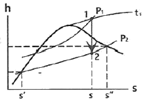
- 0.69
- 0.75
- 0.79
- 0.80
(정답률: 24%)
34. 압력 500kPa, 온도 423K의 공기 1kg이 압력이 일정한 상태로 변하고 있다. 공기의 일이 122kJ이라면 공기에 전달된 열량(kJ)은 얼마인가? (단, 공기의 정적비열은 0.7165kJ·kgK, 기체상수는 0.287kJ/kg·K이다.)
- 426
- 526
- 626
- 726
(정답률: 22%)
35. 압력이 1300kPa인 탱크에 저장된 건포화 증기가 노즐로부터 100kPa로 분출되고 있다. 입계압력 Pc는 몇 kPa인가? (단, 비열비는 1.135이다.)
- 751
- 643
- 582
- 525
(정답률: 25%)
36. 압력이 일정한 용기 내에 이상기체를 외부에서 가열하였다. 온도가 T1에서 T2로 변화하였고, 기체의 부피가 V1에서 V2로 변화하였다. 공기의 정압비열 Cp에 대한 식으로 옳은 것은? (단, 이 이상기체의 압력은 p, 전달된 단위 질량당 열량은 q이다.)
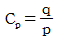
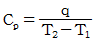
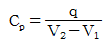
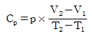
(정답률: 60%)
37. 최저온도, 압축비 및 공급 열량이 같을 경우 사이클의 효율이 큰 것부터 작은 순서대로 옳게 나타낸 것은?
- 오토사이클 ＞ 디젤사이클 ＞ 사바테사이클
- 사바테사이클 ＞ 오토사이클 ＞ 디젤사이클
- 디젤사이클 ＞ 오토사이클 ＞ 사바테사이클
- 오토사이클 ＞ 사바테사이클 ＞ 디젤사이클
(정답률: 72%)
38. 다음 중 상온에서 비열비 값이 가장 큰 기체는?
- He
- O2
- CO2
- CH4
(정답률: 71%)
39. -35℃, 22MPa의 질소를 가역단열과정으로 500kPa까지 팽창했을 때의 온도(℃)는? (단, 비열비는 1.41이고 질소를 이상기체로 가정한다.)
- -180
- -194
- -200
- -206
(정답률: 61%)
40. 역카르노 사이클로 작동하는 냉장고가 있다. 냉장고 내부의 온도가 0℃이고 이곳에서 흡수한 열량이 10kW이고, 30℃의 외기로 열이 방출된다고 할 때 냉장고를 작동하는데 필요한 동력(kW)은?
- 1.1
- 10.1
- 11.1
- 21.1
(정답률: 39%)
3과목: 계측방법
41. 국소대기압이 740mmHg인 곳에서 게이지압력이 0.4bar일 때 절대압력(kPa)은?
- 100
- 121
- 139
- 156
(정답률: 48%)
42. 0℃에서 저항이 80Ω이고 저항온도계수가 0.002인 저항온도계를 노안에 삽입했더니 저항이 160Ω이 되었을 때 노안의 온도는 약 몇 ℃인가?
- 160℃
- 320℃
- 400℃
- 500℃
(정답률: 32%)
43. 차압식 유량계에 대한 설명으로 옳은 것은?
- 유량은 교축기구 전후의 차압에 비례한다.
- 유량은 교축기구 전후의 차압의 제곱근에 비례한다.
- 유량은 교축기구 전후의 차압의 근사값이다.
- 유량은 교축기구 전후의 차압에 반비례한다.
(정답률: 53%)
44. 금속의 전기 저항 값이 변화되는 것을 이용하여 압력을 측정하는 전기저항압력계의 특성으로 맞는 것은?
- 응답속도가 빠르고 초고압에서 미압까지 측정한다.
- 구조가 간단하여 압력검출용으로 사용한다.
- 먼지의 영향이 적고 변동에 대한 적응성이 적다.
- 가스폭발 등 급속한 압력변화를 측정하는데 사용한다.
(정답률: 59%)
45. 다음 각 습도계의 특징에 대한 설명으로 틀린 것은?
- 노점 습도계는 저습도를 측정할 수 있다.
- 모발 습도계는 2년마다 모발을 바꾸어 주어야 한다.
- 통풍 건습구 습도계는 2.5~5m/s의 통풍이 필요하다.
- 저항식 습도계는 직류전압을 사용하여 측정한다.
(정답률: 71%)
46. 기준압력과 주 피드백 신호와의 차에 의해서 일정한 신호를 조작요소에 보내는 제어장치는?
- 조절기
- 전송기
- 조작기
- 계측기
(정답률: 60%)
47. 다음 온도계 중 비접촉식 온도계로 옳은 것은?
- 유리제 온도계
- 압력식 온도계
- 전기저항식 온도계
- 광고온계
(정답률: 74%)
48. 전자유량계의 특징에 대한 설명 중 틀린 것은?
- 압력손실이 거의 없다.
- 내식성 유지가 곤란하다.
- 전도성 액체에 한하여 사용할 수 있다.
- 미소한 측정전압에 대하여 고성능의 증폭기가 필요하다.
(정답률: 54%)
49. 가스크로마토그래피는 기체의 어떤 특성을 이용하여 분석하는 장치인가?
- 분자량 차이
- 부피 차이
- 분압 차이
- 확산속도 차이
(정답률: 64%)
50. 피토관에 의한 유속 측정식은 다음과 같다.
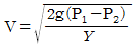
이 때 P1, P2의 각각의 의미는? (단, v는 유속 g는 중력가속도 이고, γ는 비중량이다.)- 동압과 전압을 뜻한다.
- 전압과 정압을 뜻한다.
- 정압과 동압을 뜻한다.
- 동압과 유체압을 뜻한다.
(정답률: 65%)
51. 다음 각 압력계에 대한 설명으로 틀린 것은?
- 벨로즈 압력계는 탄성식 압력계이다.
- 다이어프램 압력계의 박판재료로 인청동, 고무를 사용할 수 있다.
- 침종식 압력계는 압력이 낮은 기체의 압력 측정에 적당하다.
- 탄성식 압력계의 일반교정용 시험기로는 전기식 표준압력계가 주로 사용된다.
(정답률: 56%)
52. 서로 다른 2개의 금속판을 접합시켜서 만든 바이메탈 온도계의 기본 작동원리는?
- 두 금속판의 비열의 차
- 두 금속판의 열전도도의 차
- 두 금속판의 열팽창계수의 차
- 두 금속판의 기계적 강도의 차
(정답률: 70%)
53. 자동연소제어 장치에서 보일러 증기압력의 자동제어에 필요한 조작량은?
- 연소량과 증기압력
- 연소량과 보일러수위
- 연료량과 공기량
- 증기압력과 보일러수위
(정답률: 55%)
54. 제백(Seebeck)효과에 대하여 가장 바르게 설명한 것은?
- 어떤 결정체를 압축하면 기전력이 일어난다.
- 성질이 다른 두 금속의 접점에 온도차를 두면 열기전력이 일어난다.
- 고온체로부터 모든 파장의 전방사에너지는 절대온도의 4승에 비례하여 커진다.
- 고체가 고온이 되면 단파장 성분이 많아진다.
(정답률: 72%)
55. 유량 측정에 사용되는 오리피스가 아닌 것은?
- 베나탭
- 게이지탭
- 코너탭
- 플랜지탭
(정답률: 52%)
56. 유량계의 교정방법 중 기체 유량계의 교정에 가장 적합한 방법은?
- 밸런스를 사용하여 교정한다.
- 기준 탱크를 사용하여 교정한다.
- 기준 유량계를 사용하여 교정한다.
- 기준 체적관을 사용하여 교정한다.
(정답률: 65%)
57. 저항온도계에 활용되는 측온저항체 종류에 해당되는 것은?
- 서미스터(thermistor)저항 온도계
- 철-콘스탄탄(IC) 저항 온도계
- 크로멜(chromel) 저항 온도계
- 알루멜(alumel) 저항 온도계
(정답률: 75%)
58. 공기 중에 있는 수증기 양과 그때의 온도에서 공기 중에 최대로 포함할 수 있는 수증기의 양을 백분율로 나타낸 것은?
- 절대 습도
- 상대 습도
- 포화 증기압
- 혼합비
(정답률: 59%)
59. 다음 가스 분석계 중 화학적 가스분석계가 아닌 것은?
- 밀도식 CO2계
- 오르자트식
- 헴펠식
- 자동화학식 CO2계
(정답률: 57%)
60. 가스크로마토그래피의 구성요소가 아닌 것은?
- 유량계
- 칼럼검출기
- 직류증폭장치
- 캐리어 가스통
(정답률: 61%)
4과목: 열설비재료 및 관계법규
61. 에너지이용 합리화법령에 따라 산업통상자원부장관은 에너지 수급안정을 위하여 에너지 사용자에 필요한 조치를 할 수 있는데 이 조치의 해당사항이 아닌 것은?
- 지역별·주요 수급자별 에너지 할당
- 에너지 공급설비의 정지명령
- 에너지의 비축과 저장
- 에너지사용기자재 사용 제한 또는 금지
(정답률: 45%)
62. 에너지이용 합리화법령에 따라 검사대상기기 관리자는 선임된 날부터 얼마 이내에 교육을 받아야 하는가?
- 1개월
- 3개월
- 6개월
- 1년
(정답률: 64%)
63. 내화물 사용 중 온도의 급격한 변화 혹은 불균일한 가열 등으로 균열이 생기거나 표면이 박리되는 현상을 무엇이라 하는가?
- 스폴링
- 버스팅
- 연화
- 수화
(정답률: 67%)
64. 무기질 보온재에 대한 설명으로 틀린 것은?
- 일반적으로 안전사용온도범위가 넓다.
- 재질자체가 독립기포로 안정되어있다.
- 비교적 강도가 높고 변형이 적다.
- 최고온도사용온도가 높아 고온에 적합하다.
(정답률: 57%)
65. 다음 밸브 중 유체가 역류하지 않고 한쪽방향으로만 흐르게 하는 밸브는?
- 감압밸브
- 체크밸브
- 팽창밸브
- 릴리프밸브
(정답률: 78%)
66. 에너지이용 합리화법령에서 에너지사용의 제한 또는 금지에 대한 내용으로 틀린 것은?
- 에너지 사용의 시기 및 방법의 제한
- 에너지 사용시설 및 에너지사용기자재에 사용할 에너지의 지정 및 사용에너지의 전환
- 특정 지역에 대한 에너지 사용의 제한
- 에너지 사용 설비에 관한 사항
(정답률: 39%)
67. 단열효과에 대한 설명으로 틀린 것은?
- 열확산계수가 작아진다.
- 열전도계수가 작아진다.
- 노내 온도가 균일하게 유지된다.
- 스폴링 현상을 촉진시킨다.
(정답률: 75%)
68. 고압 증기의 옥외배관에 가장 적당한 신축이음 방법은?
- 오프셋형
- 벨로즈형
- 루프형
- 슬리브형
(정답률: 63%)
69. 중요 소성을 하는 평로에서 축열실의 역할로서 가장 옳은 것은?
- 제품을 가열한다.
- 급수를 예열한다.
- 연소용 공기를 예열한다.
- 포화 증기를 가열하여 과열증기로 만든다.
(정답률: 59%)
70. 다음 중 셔틀요(shuttle kiln)는 어디에 속하는가?
- 반연속요
- 승염식요
- 연속요
- 불연속요
(정답률: 66%)
71. 에너지이용 합리화법령에 따라 인정검사대상기기 관리자의 교육을 이수한 자가 관리할 수 없는 검사대상 기기는?
- 압력용기
- 열매체를 가열하는 보일러로서 용량이 581.5kW 이하인 것
- 온수를 발생하는 보일러로서 용량이 581.5kW 이하인 것
- 증기보일러로서 최고사용압력이 2MPa이하이고, 전열 면적이 5m2이하인 것
(정답률: 62%)
72. 에너지이용 합리화법령에 따른 에너지이용 합리화 기본계획에 포함되어야 할 내용이 아닌 것은?
- 에너지 이용 효율의 증대
- 열사용기자재의 안전관리
- 에너지 소비 최대화를 위한 경제구조로의 전환
- 에너지원간 대체
(정답률: 52%)
73. 단열재를 사용하지 않는 경우의 방출열량이 350W이고, 단열재를 사용할 경우의 방출열량이 100W라 하면 이 때의 보온효율은 약 몇 %인가?
- 61
- 71
- 81
- 91
(정답률: 59%)
74. 에너지이용 합리화법령에 따라 검사대상기기 관리대행기관으로 지정을 받기 위하여 산업통상자원부장관에게 제출하여야 하는 서류가 아닌 것은?
- 장비명세서
- 기술인력 명세서
- 기술인력 고용계약서 사본
- 향후 1년간 안전관리대행 사업계획서
(정답률: 67%)
75. 에너지이용 합리화법의 목적으로 가장 거리가 먼 것은?
- 에너지의 합리적 이용을 증진
- 에너지 소비로 인한 환경피해 감소
- 에너지원의 개발
- 국민 경제의 건전한 발전과 국민복지의 증진
(정답률: 66%)
76. 에너지이용 합리화법령상 산업통상자원부장관이 에너지다소비사업자에게 개선명령을 할 수 있는 경우는 에너지관리지도 결과 몇 %이상의 에너지 효율개선이 기대될 때로 규정하고 있는가?
- 10
- 20
- 30
- 50
(정답률: 72%)
77. 용광로에서 선철을 만들 때 사용되는 주원료 및 부재료가 아닌 것은?
- 규선석
- 석회석
- 철광석
- 코크스
(정답률: 58%)
78. 에너지이용 합리화법령상 특정열사용기자재 설치·시공범위가 아닌 것은?
- 강철제보일러 세관
- 철금속가열로의 시공
- 태양열 집열기 배관
- 금속균열로의 배관
(정답률: 47%)
79. 에너지이용 합리화법령에서 정한 에너지사용자가 수립하여야 할 자발적 협약이행계획에 포함되지 않는 것은?
- 협약 체결 전년도의 에너지소비 현황
- 에너지관리체제 및 관리방법
- 전년도의 에너지사용량·제품생산량
- 효율향상목표 등의 이행을 위한 투자계획
(정답률: 45%)
80. 터널가마(Tunnel kiln)의 특징에 대한 설명 중 틀린 것은?
- 연속식 가마이다.
- 사용연료에 제한이 없다.
- 대량생산이 가능하고 유지비가 저렴하다.
- 노내 온도조절이 용이하다.
(정답률: 58%)
5과목: 열설비설계
81. 연도 등의 저온의 전열면에 주로 사용되는 수트 블로어의 종류는?
- 삽입형
- 예열기 클리너형
- 로터리형
- 건형(gun type)
(정답률: 61%)
82. 플래시 탱크의 역할로 옳은 것은?
- 저압의 증기를 고압의 응축수로 만든다.
- 고압의 응축수를 저압의 증기로 만든다.
- 고압의 증기를 저압의 응축수로 만든다.
- 저압의 응축수를 고압의 증기로 만든다.
(정답률: 46%)
83. 다이어그램 밸브의 특징에 대한 설명으로 틀린 것은?
- 역류를 방지하기 위한 것이다.
- 유체의 흐름에 주는 저항이 적다.
- 기밀(氣密)할 때 패킹이 불필요하다.
- 화학약품을 차단하여 금속부분의 부식을 방지한다.
(정답률: 72%)
84. 그림과 같은 노냉수벽의 전열면적(m2)은? (단, 수관의 바깥지름 30mm, 수관의 길이 5m, 수관의 수 200개이다.)
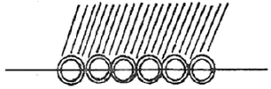
- 24
- 47
- 72
- 94
(정답률: 45%)
85. 지름이 d, 두께가 t인 얇은 살두께의 원통안에 압력 P가 작용할 때 원통에 발생하는 길이방향의 인장응력은?
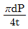
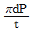
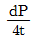
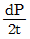
(정답률: 55%)
86. 스케일(scale)에 대한 설명으로 틀린 것은?
- 스케일로 인하여 연료소비가 많아진다.
- 스케일은 규산칼슘, 황산칼슘이 주성분이다.
- 스케일은 보일러에서 열전달을 저하시킨다.
- 스케일로 인하여 배기가스 온도가 낮아진다.
(정답률: 72%)
87. 노통연관식 보일러에서 평형부의 길이가 230mm 미만인 파형노통의 최소 두께(mm)를 결정하는 식은? (단, P는 최고 사용압력(MPa), D는 노통의 파형부에서의 최대 내경과 최소 내경의 평균치(모리슨형 노통에서는 최소내경에 50mm를 더한 값)(mm), C는 노통의 종류에 따른 상수이다.)
- 10PDC
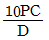
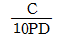
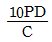
(정답률: 59%)
88. 가로 50cm, 세로 70cm인 300℃로 가열된 평판에 20℃의 공기를 불어주고 있다. 열전달계수가 25W/m2·℃때 열전달량은 몇 kW인가?
- 2.45
- 2.72
- 3.34
- 3.96
(정답률: 33%)
89. 수질(水質)을 나타내는 ppm의 단위는?
- 1만분의 1단위
- 십만분의 1단위
- 백만분의 1단위
- 1억분의 1단위
(정답률: 74%)
90. 유량 2200kg/h인 80℃의 벤젠을 40℃까지 냉각시키고자 한다. 냉각수 온도를 입구 30℃, 출구 45℃로 하여 대향류열교환기 형식의 이중관식 냉각기를 설계할 때 적당한 관의 길이(m)는? (단, 벤젠의 평균비열은 1884J/kg·℃, 관 내경 0.0427m, 총괄전열계수는 600W/m2·℃이다.)
- 8.7
- 18.7
- 28.6
- 38.7
(정답률: 29%)
91. 가스용 보일러의 배기가스 중 이산화탄소에 대한 일산화탄소의 비는 얼마 이하여야 하는가?
- 0.001
- 0.002
- 0.003
- 0.0⑤
(정답률: 56%)
92. 오일 버너로서 유량 조절범위가 가장 넓은 버너는?
- 스팀 제트
- 유압분무식 버너
- 로터리 버너
- 고압 공기식 버너
(정답률: 45%)
93. 원통형 보일러의 내면이나 관벽 등 전열면에 스케일이 부착될 때 발생되는 현상이 아닌 것은?
- 열전달률이 매우 작아 열전달 방해
- 보일러의 파열 및 변형
- 물의 순환속도 저하
- 전열면의 과열에 의한 증발량 증가
(정답률: 62%)
94. 배관용 탄소강관을 압력용기의 부분에 사용할 때에는 설계 압력이 몇 MPa이하일 때 가능한가?
- 0.1
- 1
- 2
- 3
(정답률: 53%)
95. 보일러의 급수처리방법에 해당되지 않는 것은?
- 이온교환법
- 응집법
- 희석법
- 여과법
(정답률: 46%)
96. 수관식 보일러에 속하지 않는 것은?
- 코르니쉬 보일러
- 바브콕 보일러
- 라몬트 보일러
- 벤손 보일러
(정답률: 57%)
97. 평노통, 파형노통, 화실 및 적립보일러 화실판의 최고 두꼐는 몇 mm 이하이어야 하는가? (단, 습식화실 및 조합노통 중 평노통은 제외한다.)
- 12
- 22
- 32
- 42
(정답률: 61%)
98. 다음 중 보일러의 전열효율을 향상시키기 위한 장치로 가장 거리가 먼 것은?
- 수트 블로어
- 인젝터
- 공기예열기
- 절탄기
(정답률: 54%)
99. 보일러 수의 분출 목적이 아닌 것은?
- 프라이밍 및 포밍을 촉진한다.
- 물의 순환을 촉진한다.
- 가성취화를 방지한다.
- 관수의 pH를 조절한다.
(정답률: 72%)
100. 수관식 보일러에 대한 설명으로 틀린 것은?
- 증기 발생의 소요시간이 짧다.
- 보일러 순환이 좋고 효율이 높다.
- 스케일의 발생이 적고 청소가 용이하다.
- 드럼이 작아 구조적으로 고압에 적당하다.
(정답률: 62%)